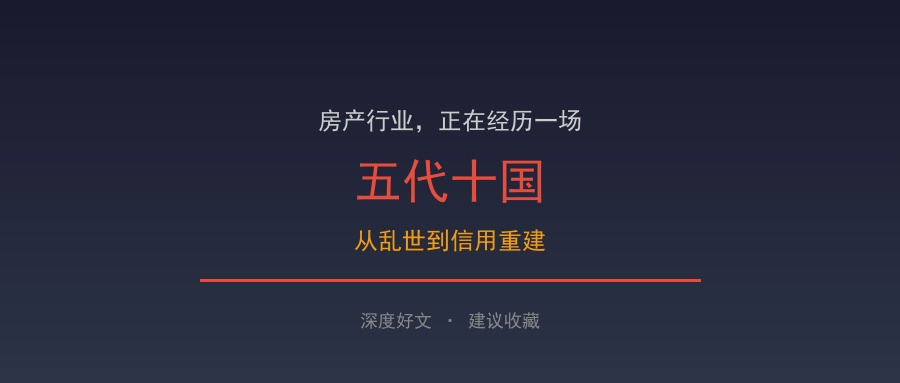
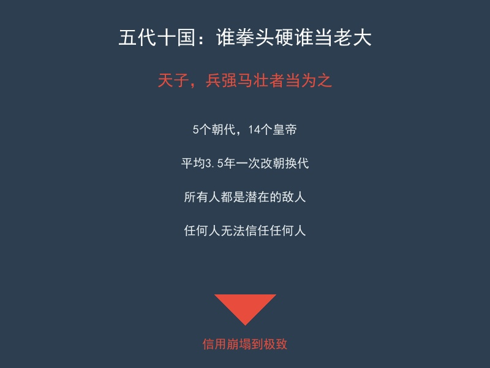
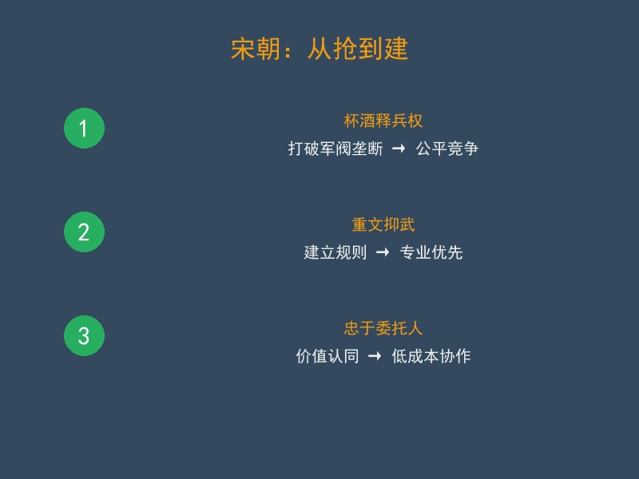
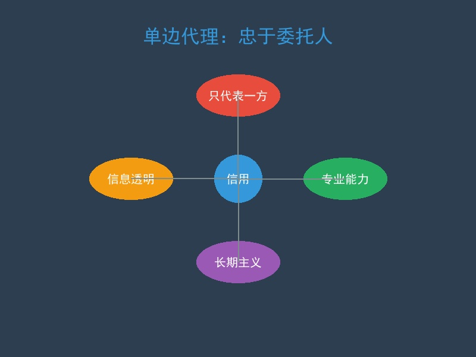
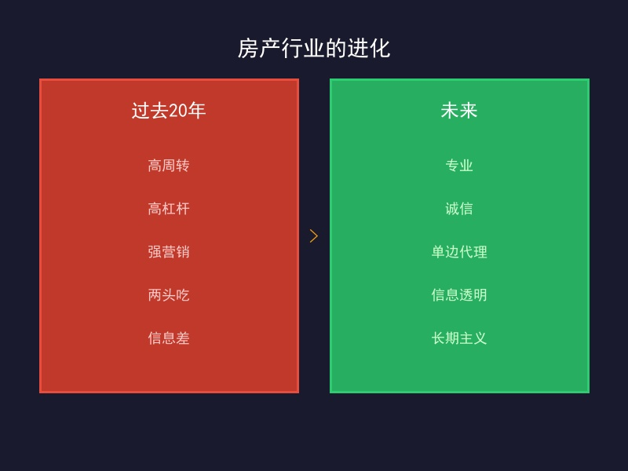

后晋有个军阀安重荣，说过一句很炸裂的话：
“天子，兵强马壮者当为之，宁有种耶！”
翻译成人话就是：谁拳头硬，谁就是老大。
放在历史里，这叫乱世逻辑。放在今天的房产行业里，这叫——信用塌了以后，大家重新退回丛林法则。
你看现在这个市场，是不是越来越像：

这就是五代十国最核心的特征：没有稳定秩序，没有清晰边界，没有真正信任。
所有人都在博弈，所有人都怕吃亏，所有人都默认先保护自己。
五代后期还有一段特别经典的对话。
武将史弘肇说：
“安朝廷，定祸乱，直须长枪大剑，至如毛锥子，焉足用哉！”
意思很简单：解决问题靠刀，靠枪，靠硬实力，笔杆子没用。
结果文官王章直接怼回去：
“虽有长枪大剑，若无毛锥子，赡军财赋，自何而集？”
翻译一下：你就算再能打，没有制度、没有税赋、没有秩序，你拿什么养这套系统？
它点破了一个事实：乱世最大的尽头，不是更乱，而是抢都抢不动了。
这像不像今天的房产行业？
赵匡胤上位这件事，本身也很“五代”。陈桥兵变，黄袍加身，从形式上看，和前面那些改朝换代没本质区别。
但问题恰恰在这里：为什么同样是上位，宋朝没有继续掉进五代循环，而是慢慢走出了乱世？
因为赵匡胤和宋初的那套做法，核心不是“继续抢”，而是开始“重建”。
重建什么？不是先重建财富，也不是先重建规模，而是先重建：秩序、规则、信任。

这是宋初最重要的一步。因为如果大家还都觉得，谁手里资源多、谁就能掀桌子，那这个系统就永远稳定不下来。
放到房产行业里也一样。如果今天这个行业还是默认：谁资本大谁就能教育市场，谁流量大谁就能定义价值，谁渠道强谁就能左右交易，那行业不会真正恢复。
宋朝后来为什么能稳？因为它慢慢把“蛮力优先”切换成了“规则优先”。
这件事放到今天，就是：从拼手段，回到拼信用；从拼话术，回到拼专业。
五代的问题，不只是乱。更大的问题是：大家已经不相信什么叫正当，什么叫忠诚，什么叫长期。
宋朝真正厉害的地方，是它重新把“什么是对的”这件事慢慢立起来了。
为什么现在大家对中介反感？不是因为中介这个职业天然有问题，而是因为太多人一上来就站在自己的佣金立场上，而不是站在委托人的立场上。
这时候，所谓“服务”，很容易被理解成“话术”；所谓“撮合”，很容易被理解成“套路”。
所以我越来越觉得，房产行业真正的下一阶段，不是谁更会投流，不是谁更会包装，而是谁先把这件事讲清楚：我到底忠于谁。


很多人还在等市场回暖。但我越来越觉得，这轮真正重要的，不是“回暖”，而是“重建”。
因为没有信用的回暖，最后只会变成短暂反弹；没有秩序的成交，最后只会继续透支未来；没有立场的服务，最后只会加深不信任。
所以，如果用一句话概括今天房产行业的问题，我会说：
最危险的，不是卖不动了，而是没人再信了。
而如果用一句话概括未来的机会，我会说：
谁先把信用重建起来，谁就先拿到下一个时代的门票。
这也是为什么我觉得，单边代理不是一个小优化，不是一个小技巧，而是一个很大的方向。它是在旧体系已经卷不动之后，重新回答：这个行业，还能靠什么赢？
很多人谈赵匡胤，只看到黄袍加身。但我觉得他真正厉害的，不是会抓机会，而是他知道什么时候要刹车。
如果继续按五代那套逻辑玩下去，宋朝也不过是“五代之后的第六代”。但他没有继续往“谁更狠”那条路走，而是开始往“怎么让系统稳定下来”那条路走。
这一点，特别值得今天的房产行业看一眼。因为今天这个行业，也走到了同样的分叉口：